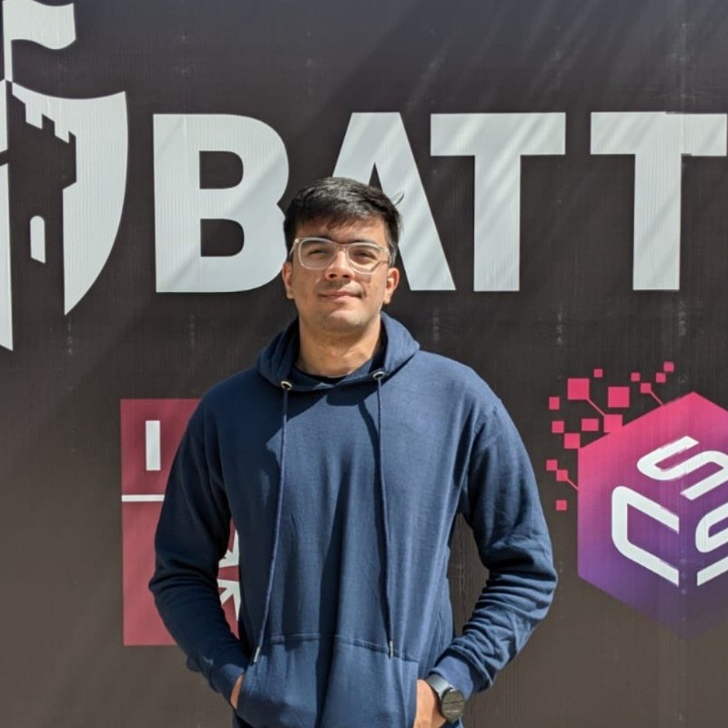

Hi, I'm Itbaan Safwan
Final Year B.S. Computer Science Student at IBA Karachi
Welcome to my personal webpage. I am currently a senior undergraduate student at the Institute of Business Administration (IBA) Karachi. My academic and research interests are primarily focused on Multimodal AI and Explainable AI (xAI).
Feel free to explore my recent projects or reach out via email.
Selected Projects
-
MediaEval 2025 (Distinction Award, 2nd Place)
I worked on VLM explainability for gastrointestinal imaging. Using a multitask training approach on Florence-2 (0.2B), our model generated reasoned VQA answers alongside grounded masks, successfully outperforming a 3B parameter model. [Paper]
-
ArabicNLP 2025 @ EMNLP 2025 Workshop (3rd Place)
I tackled multimodal Arabic hateful meme detection. I conducted an ablation study on three modality-fusion methods (attention-based, contrastive learning, and 1D convolution), achieving top-3 performance using the 1D convolution approach. [Paper]
-
Sketch-RNN Implementation (PyTorch)
Reproduced Google’s Sketch-RNN architecture from scratch using PyTorch, including custom implementation of loss functions. Trained the model on a cat sketch dataset for 90 epochs, enabling it to generate coherent and diverse cat drawings. [GitHub]
Recent Blogs & Articles
-
Qwen2-VL Attention Analysis March 2026
Inspired by a recent CVPR paper on VLM attention heads, I conducted an independent experiment on Qwen2-VL (2B). By mapping object names to attention heatmaps, I empirically confirmed that specific heads in Layer 9 act as semantic segmenters, strongly capturing the relationship between text and visual regions.
-
Harmonizers: A Theory December 2024
Discussing the process through which the brain achieves an "optimal balance" of multidimensional knowledge, and the inevitable role of personal biases.
-
LLM and Reasoning January 2025
Exploring the philosophical distinction between "true" human reasoning and the linguistic-bound knowledge representation of Large Language Models.
-
A Bird’s eye view of Transformers February 2025
An intuitive breakdown of Transformer architecture that explores tokenization, embeddings, attention mechanisms, and MLPs. This piece is based on concepts from 3Blue1Brown and Serrano.Academy, and concludes with thoughts on AGI.
Other Stuff
- Digital Paint Gallery: These are some digital paints that I made during my gap years and when my mind wandered.